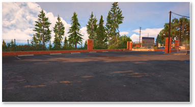

O local do recrutamento padrão será em Paleto dentro do perímetro do departamento de policia como a localização ao lado.
É de extrema importância realizar o recrutamento nesse local, e só será permitido a presença de oficias que possuem o cargo de “Instrutores”.
O recrutamento terá uma taxa de R$ 5.000,00 que será cobrado logo no alinhamento no departamento de policia. Para compra de comida, bebidas e roupas usada no local.
O Instrutor devera ter auxilio de mais 1 instrutor quando for realizar o recrutamento. Vale lembrar que quanto Policia Militar e Policia Civil possui seus instrutores e deverão seguir os mesmos procedimentos.
Os conscritos devem ser instruídos desde o início, com o objetivo de ter tempo suficiente para os aprovados receberem as primeiras instruções antes de saírem.
A parte inicial, que inclui a corrida e a natação, visa simular um teste físico da vida real e evitar aqueles que atrapalham o recrutamento. A segurança dos recrutas é responsabilidade dos policiais, que devem estar presentes em cada ponto de chegada para garantir que não haja trapaça durante o teste.
É importante valorizar os conscritos que querem aprender e são esforçados, dando-lhes crédito na nota da parte teórica. Sempre que uma resposta estiver incorreta, o policial deve corrigi-la e explicar a resposta correta.
Se a resposta estiver correta, o policial deve fornecer comentários adicionais para ajudar no conhecimento do conscrito. É importante escolher bons policiais para compor a Polícia Civil e a Policia Mili tar, evitando arredondar notas ou dar pontuação por dó.
Os conscritos devem ser testados psicologicamente e ter sua paciência testada para avaliar sua capacidade de lidar com situações estressantes.
1.1. Verificar local antes de iniciar o recrutamento;
1.2. Parar as QSV em um local seguro e tranca-la;
1.3. Alinhar todos os novos conscritos em linhas de 4, próximo ao estacionamento.
1.4. O instrutor devera realizar a chamada novamente;
1.5. É importante verificar se o conscrito está em blacklist, ou se possui ficha suja com o Departamento de Policia.
1.6. O conscrito devera assinar um termo de responsabilidade para continuar com o recrutamento.
Com tudo isso verificado e pronto parar dar andamento no recrutamento, o instrutor começara a realizar os testes físicos. Ex: Corrida entorno da praia ou corrida na subida da serralheria.
Perguntas:
1. Peça o conscrito para se apresentar;
2. Peça o conscrito para sitar ao menos 8 COD. Q;
3. Peça o conscrito para sitar os 7 níveis de patrulhamento;
4. Peça o conscrito para sitar os tipos de abordagens;
5. Peça o conscrito para realizar uma modulação: .
Ex: Lancer Evolution X, Preto, QRV Disparo de tiro, praça e 4 indivíduos;
6. Peça o conscrito para realizar uma abordagem em uma “mulher” e “Homem”;
7. Peça o conscrito para realizar uma modulação de iniciando COD. 0;
8. Peça o conscrito para sitar as funções do p1, p2, p3 e p4;
9. Peça o conscrito para referencia um situação de fuga a pé;
10. Peça o conscrito para sitar a postura que todo oficial deve ter no radio;